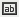
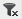
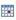
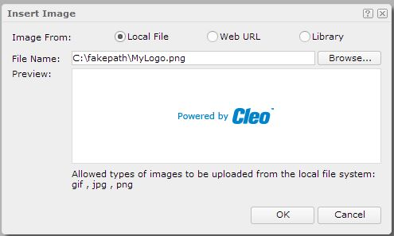

Working with dashboards
For information about navigating through the dashboard tabs and the side bar icons, see Window Elements. For information about the resources that can be used within a dashboard, see Resources Panel. For information about inserting dashboard objects, see Inserting Objects.
Opening an Existing Dashboard
To open a dashboard, either:
- Click Open on the side bar, or
- Click Options on the side bar and select Open from the options list.
Either of these operations will display the Open Dashboard dialog box. Through the dialog box, open dashboards from these locations:
- My Reports: this displays all dashboards that were previously saved to this location.
- Public Reports\Custom Business Dashboards: this displays all dashboards that were previously saved by any user in your group to this location. (This folder is applicable only to Cleo Dashboards™ applications.)
- Public Reports\Business Dashboards: this displays all factory-built dashboards that were provided with the baseline product. (This folder is applicable only to Cleo Dashboards™ applications.)
- Public Reports\Custom System Monitor: this displays all dashboards that were previously saved by any user in your group to this location. (This folder is applicable only to Cleo System Monitor™ applications.)
- Public Reports\System Monitor: this displays all factory-built dashboards that were provided with the baseline product. (This folder is applicable only to Cleo System Monitor™ applications.)
After selecting the desired dashboard, click OK to display the dashboard in new dashboard tab. The name of the dashboard will be displayed in the tab bar.
Modifying an Existing Dashboard
It is possible to modify an existing dashboard, with the exception of the factory-built dashboards; these can never be altered. To modify, open the desired dashboard (see Opening an Existing Dashboard).
When first opening a dashboard, the Save icon on the side bar is dimmed and inactive. After making all desired changes (such as inserting new objects, moving objects around, and removing objects) the Save icon will be made active. An asterisk (*) will also appear next to the dashboard name in the tab bar. These visual flags indicate that changes are pending and should be saved.
When the dashboard has been satisfactorily modified, save your changes. For more information, see Saving a Dashboard.
Saving a Dashboard
To save changes made to an existing dashboard, or to save a newly created dashboard, either:
- Click Save
 on the side bar, or
on the side bar, or - Click Options on the side bar and select Save from the Options list.
If you do not have permission to save to the current location (for example, you are trying to save one of the factory-built dashboards), the following warning will be displayed. In this case, click Options on the side bar and select Save As from the options list.
If the dashboard is newly created and has not yet been saved, the Save As dialog box is automatically displayed.
In the Save In field, select the desired destination folder. The permitted save locations are:
- My Reports: your privately secured access area.
- Public Reports\Custom Business Dashboards: access area shared with all users in your group. (This folder is applicable only to Cleo Dashboards™ applications.)
- Public Reports\Custom System Monitor: access area shared with all users in your group. (This folder is applicable only to Cleo System Monitor™ applications.)
Saving is forbidden in the following locations:
- Public Reports\Business Dashboards: This folder is applicable only to Cleo Dashboards™ applications.
- Public Reports\System Monitor: This folder is applicable only to Cleo System Monitor™ applications.
In File Name, enter the name of the dashboard or use the default name. Click OK to save the dashboard.
Creating a New Dashboard
To create a new dashboard, either:
- Click
 beside the rightmost
dashboard name tab on the tab bar
beside the rightmost
dashboard name tab on the tab bar - Click New on the side bar
- Click Options on the side bar and select New from the option list.
Any of these actions will create a blank dashboard tab. You can then add components to customize the dashboard (see Inserting Objects ). Once the new dashboard is built, save it; see Saving a Dashboard for more information.
To launch your dashboard automatically upon logging into your dashboard product, ask the system administrator to configure this through VLNavigator. You can also open your new dashboard by following the steps in Opening an Existing Dashboard.
Working with the Dashboard Header
For factory-built dashboards, the dashboard header will be hidden by default. To show the dashboard header, click Optionson the side bar and select Show Dashboard Header from the options list. While the dashboard header is now open, the header border is hidden by default. You can make the border visible by either:
- Hover the cursor over the top of the dashboard. A faint line will separate the dashboard header and body areas as the cursor crosses the border.
- Click Ctrl on the keyboard to display the border.
Once the dashboard border is visible, you can drag the line vertically to adjust the size of the header and body.
To add objects to the header, drag items from the Toolbox that are designated for the header area (see Inserting Objects ).
To hide the dashboard header, click Options on the side bar and select Hide Dashboard Header from the options list.
Available dashboard header options include:
- To move an object in the dashboard header, click anywhere on the object and drag it to the desired location.
- To resize an object in the dashboard header, hover the cursor over the side or corner; the cursor will become a two-arrow icon. Drag the side or corner to the desired position.
- To edit the text of a label or the dashboard title, double-click to enter the edit mode. To change the appearance of the label or dashboard title, hover the cursor over the label and click in the dotted rectangle. Modify fonts, italics, and other text options in the Edit Label dialog box.
- To edit an image, hover the cursor over the image and click in the dotted rectangle. Select another image in the Edit Image dialog box.
- To modify the properties of labels, dashboard titles, or special fields, hover the cursor on the object and then click that appears in the dotted rectangle. Modify properties in the available edit dialog box.
- To delete an object in the dashboard header, hover the cursor over the object and click in the dotted rectangle.
Working with the Dashboard Body
Dashboards are typically comprised of library components, filter controls, and sliders. They can also contain third-party URL frames and general HTML components. Available options on dashboard components are:
- Moving an object: click on the object title bar and drag it to the desired location.
- Resizing an object: hover the cursor over the side or corner of the dashboard. The cursor will become a two-arrow icon. Drag the side or corner to the desired position.
- Customizing component title bars: click Options on the side bar and select Component Title Bar from the options list. In the Customize Component Title Bar dialog box, specify the method of displaying the component title bar, along with the options on it. When complete, click OK.
- Maximizing a component: click on the component title bar to maximize the component. On the second click, the component will be restored to the original size.
- Editing settings: click on the component title bar and select Edit Setting from the drop-down list. Different settings will be editable for library components and toolbox objects.
- Editing library component settings (using component configuration panels): each library
component contains a (hidden) configuration panel which can contain configuration
parameters. The panel sometimes contains parameters that mirror the dashboard parameters
(see Specifying Dashboard Parameter Values). The configuration panel can also be used to
control certain properties of the associated component. For example, Show Zoom
Slider is an option that toggles the zoom slider on certain library
components).
- To access a library component's configuration panel, click on the component title bar and select Edit Setting from the drop-down list. A configuration panel is displayed.
- Change the desired settings and click OK.
- Editing toolbox component settings: To edit settings for a toolbox component, such as a slider, filter control, URL frame, or HTML object, click on the component title bar and select Edit Setting from the drop-down list. A dialog box will be displayed. Make the appropriate changes and click OK.
- Exporting a component: To export a component to a PDF, spreadsheet, or other format, click the icon in the component title bar and select Export from the drop-down list. The Export dialog box will be shown. Select the desired export format and click OK.
- Deleting an object: click on the component title bar and select Delete from the drop-down list.
- Showing component information: click the icon in the component title bar and select About from the drop-down list. An information panel will is displayed. Click OK to close the informational panel.
- Using scroll bars on a component: for tables and charts, use the scroll bar to navigate if the container cannot display all data of the component.
- Turning component pages: if a tabular component contains more than one page, a page
navigation bar will be available below the table. To use the navigation bar:
- key in a specific page number
- advance to the next page (click )
- go back to the previous page (click icon)
- advance to the final page (click icon)
- go back to the first page (click icon)
Note: If the table you are viewing is very large and you attempt to page directly to the final page, the report server could become overloaded and time out. In this case you will receive a warning stating that the server resources cannot be accessed. If this occurs, the report server is sending many pages of data to the browser. To prevent this error, page incrementally to the back of the report, such as in 1000-page increments. - Going to links: when an object in a library component is linked to a sub-report, the cursor changes into a hand icon when hovering over the object. The object is typically underlined as a visual indicator that a link sub-report is available. Click the link to launch the sub-report.
Refreshing a Dashboard
To refresh the data within the components of the dashboard, click Refresh on the side bar. This will re-query the database and update all associated data components.
Specifying Dashboard Parameter Values
Some dashboards have configurable parameters; in this case, the  icon on the side bar is displayed.
- Click Enter Parameter values on the side bar. The Enter Parameter Values dialog box is displayed.
- Modify the appropriate parameters and click Submit. The dialog box
will close and the database will be re-queried with the new parameter settings.Note: After modifying the parameters, the dashboard will indicate that changes were made via an asterisk present next to the dashboard name in the tab bar. If you save the dashboard, it will save the new parameter settings as well. See Saving a Dashboard.
- To save a set of parameters as a local default associated with your login, select Save as default. To access these parameter settings in the future, select Reset and then User Defined Default Values.
Dashboards: Clearing All Filters on a Dashboard
There are many ways in which data can be filtered on a dashboard (see Filtering Dashboard Component Data ). To reset your dashboard and quickly clear all the filters, you can either:- Click Clear Filters on the side bar
- Click Options and select Clear Filters from the options list
Filtering Dashboard Component Data
To filter the data within the data components of a dashboard, select subsets of data through:
- Sliders
- Filter Controls
- Chart Zoom Sliders
- Right-click Filter Options
In all cases, you can clear all filters by clicking Clear Filters on the side bar. See Clearing All Filters on a Dashboard.
See Inserting Objects for information about filter controls. The remaining filter controls are accessed directly through the library components.
Sliders
Sliders allow you to select a range of values from a list. Sliders are best tied, or bound, to numeric or date fields (e.g., File Size, Start Time). The slider bar represents the scale from lowest to highest, within the current record set, of the bound field's values. The current record set contains all records returned from the most recent query. Since queries are executed at varying times, see the specific dashboard discussions for an understanding of the query times.
Sliders can be used to control one-to-all components on a dashboard. See the specific dashboard discussions for an understanding of which components are controlled.
The following example is a slider control that is located on the Transfers dashboard of the Cleo Dashboards™ software.
To filter a specific range within this total range, you can:
- Drag the ends of the slider bar. You will see that All is cleared and the data in the associated components is modified.
- Click the  icon to edit the
start/end date and time.
You will see a date/time dialog displayed:
Enter your desired date/time value and click OK. All is cleared and the data in the associated components is modified.
To clear your slider selection, you can:
- Select All on the slider.
- Clear all dashboard filters (see Clearing All Filters on a Dashboard).
Filter Controls
Filter controls allow you to pick one or more discrete values from a list. Filter controls are best tied, or bound, to string fields (e.g., Trading Partner, Direction). The values in the filter list comprise the set of values within the current set record set. The current record set is defined as all records returned from the most recent query. Since queries are executed at varying time, see the specific dashboard discussions for an understanding of the query times.
Filter controls can be used to control one-to-all components on a dashboard. See the specific dashboard discussions for an understanding of which components are controlled.
The following example is a filter control located on the Transfers dashboard of the Cleo Dashboards™ software:
To filter a specific set of values, you can:
- Select one specific trading partner from the Trading Partner filter. The data in the dashboard components is modified to include only transfers for the selected trading partner.
- Select multiple trading partners by holding Ctrl while selecting multiple values in the filter list. As soon as Ctrl is released, the components will update according to your selections.
To clear your filter selections, you can:
- Click the icon to clear the selections for this filter control.
- Clear all dashboard filters (see Clearing All Filters on a Dashboard).
If you have a filter with many values, you can use the quick search toolbar to help narrow your list:
- Click the icon. In the search field, type the letters/numbers to search. The list is narrowed and the search string is highlighted:
- Then, from the narrowed list, select the item(s) to filter.
Chart Zoom Sliders
Many of the charts contained in the dashboard components include a zoom slider control. In some cases the zoom slider can be turned on and off; in other cases it is always present. The zoom slider allows the user to focus on certain data.
To filter a specific data points, select the left and/or right edge of the zoom slider control and drag it. The chart is redrawn to focus only on the specific range selected.
To keep the same window size and move the viewing window within the dataset, drag the zoom slider bar to a different location along the slider. The chart updates with the new range of data.
To clear your zoom slider selections, you can:
- Click the icon to clear the selections for this zoom slider.
- Clear all dashboard filters (see Clearing All Filters on a Dashboard).
Right-Click Filter Options
On tables, it is possible filter the data directly by right-clicking on a cell in the table. You can choose any cell within the column to filter. The menu below is displayed when a cell in the Status column is clicked.
To filter a specific set of values, you can:
- Expand the submenu for by hovering the cursor over it. From this, you will see a submenu similar to what is shown below:
- Click the desired setting on which you wish to filter (e.g., Error). The table is refreshed and only records that match this value are displayed.
To clear your right-click filter selection, you can:
- Right-click on the cell again. Select Remove Filter from the Filter submenu. This will clear only the specific filter for this column.
- Clear all dashboard filters. See Clearing All Filters on a Dashboard.
Clearing All Filters on a Dashboard
There are many ways in which the data can be filtered on a dashboard. See Filtering Dashboard Component Data. To reset your dashboard and quickly clear all the filters, use one of the following methods:
- Click Clear Filters on the side bar.
- Click Options and then select Clear Filters from the options list.
Manipulating Dashboard Components
This section discusses management of the right-click menus on tables and charts contained with library components.
Tables
Except under special circumstances, all detail and group rows within table should provide right-click menus.
The right-click menu options allow you to:
- Change the viewing style of the table by selecting Apply Style and selecting a different style from the submenu.
- Sort the table rows by selecting Sort and then selecting
Ascend or Descend from the
submenu. Note: When sorting is selected on a particular detail cell and the table is grouped, the records are sorted within their associated group.
- Filter the table rows by selecting Filter and then selecting the
filter value from the submenu.Note: The First N and Last N options of the Filter submenu are only useful for non-grouped tables. Therefore, it is not recommended to use them when table are grouped.
- Remove all filters for this table component by selecting Remove Filters from the right-click menu. See Filtering Dashboard Component Data for more information on filtering.
Charts
Except under special circumstances, all charts should provide right-click menus when you click anywhere in the body of the chart.
The right-click menu options allow you to:
- Change the viewing style of the table by selecting Apply Style and then selecting a different style from the submenu.
- Swap the X-axis and Y-axis by selecting Swap Chart Groups. This option is only applicable to certain charts (i.e., those with an X-axis and a Y-axis). It is not applicable to pie charts.
- Sort the values along the X-axis by selecting Sort Category then selecting Ascend or Descend from the submenu. For pie charts, Sort Category will sort the values in the legend; the legend values correlate the category.
- For charts with an X-axis and a Y-Axis, sort the values in the legend by selecting Sort Series then selecting Ascend or Descend from the submenu. For pie charts, Sort Series has no effect.
- Change the way the data is presented by selecting Chart Type and
choosing a different type of chart. Note: Care should be given when using this options, as some chart types might not applicable to your data set.
- Hide and show the legend by toggling Hide Legend and Show Legend.
- Hide and show the legend labels by toggling Hide Legend Label and
Show Legend Label.Note: Remove Filters is not used at this time.
Inserting Objects
Whether building a new dashboard or modifying an existing dashboard, insert library components and filters. Optionally insert labels, images, special fields, and third-party links. All insertion options take place via the Resources panel. See Resources Panel. To access this panel, click Show Resources on the side bar.
Component Library
When inserting a library component from the component library, rather than copying the component from the library, it will instead be referenced from the library. Therefore, it is possible to reference the same library component from many dashboards. Any subsequent changes to the library component (e.g., through a product update) will be reflected in all referenced dashboards.
To reference a library component into the dashboard body:
- Click Show Resources on the side bar to display the Resources panel.
- Expand the Component Library node, browse to find the library component to insert, and drag it to the destination in the dashboard body.
Reports
Although the Reports node is accessible from the Resources panel (see Resources), it is not recommended to insert any objects of reports, as they are intended to be used as sub-reports of library components only and not on the dashboards directly. Insertion of report objects into a dashboard could product undesirable results.
Toolbox: Dashboard Title
A dashboard title can be inserted into the dashboard header only. To do this, click Show Resources on the side bar to display the Resources panel. Then, from the Toolbox node, drag Dashboard Title to the destination in the dashboard header. Once it has been inserted into the dashboard title, modify its text, font, etc. See Working with the Dashboard Header for information about manipulating dashboard header objects.
Toolbox: Image
Images can be inserted only into the dashboard header. To insert an image:
- Click Show Resources on the side bar. See Resources Panel.
- From the Toolbox node, drag the Image to the
destination in the dashboard header. The Insert Image dialog box is
displayed:

- To use an image in the local file system, select Local File and then click Browse to find the image.
- To use an image on a website, select Web URL; input the image URL or paste the URL in the File URL text field.
- Click OK to insert the image. Once the image has been inserted,
move, resize, or otherwise edit it. See Working with the Dashboard Header for
general information on manipulating dashboard header objects. Note: The Library option is not support by the Cleo Dashboards™ or Cleo System Monitor™ products.
Toolbox: Label
A general purpose label can be inserted into the dashboard header only. Click Show Resources on the side bar to display the Resources panel. See Resources. From the Toolbox node, drag Label to the destination in the dashboard header. Once the label has been inserted, modify its text, font, and more. See Working with the Dashboard Header for general information on manipulating dashboard header objects.
Toolbox: Special Field
Special fields can be inserted into the dashboard header only. Insert these types of special fields in the dashboard header:
- User Name: The user name that is currently logged into Cleo Dashboards or Cleo System Monitor. If the user is currently logged into the Cleo Dashboards module, the user name will be suffixed with .bd. If the user is currently logged into the Cleo System Monitor module, the user name will be suffixed with .sm. In either case, the user name is displayed in the top bar.
- Modified Date: The date of last dashboard modification.
- Modified Time: The time of last dashboard modification.
- Print Date: The date when the dashboard was last run.
- Print Time: The time when the dashboard was last run.
To insert a special field:
- Click Show Resources on the side bar. See Resources Panel.
- From the Toolbox node, drag Special Field to the destination in the dashboard header. The Insert Special Field dialog box is displayed.
- Choose the desired special field and click OK to insert it into the header. Once the special field has been inserted, it can be moved, resized, etc. See Working with the Dashboard Header for general information on manipulating dashboard header objects.
Toolbox: Slider
Sliders are used to filter component data and can be inserted into the dashboard body. To insert a slider:
- Click Show Resources on the side bar. See Resources Panel.
- From the Toolbox node, drag Slider to the destination in the dashboard body. The Insert Slider dialog box will appear:
- In the Title field, title the slider.
- Choose whether the slider is used to specify a Range of Values or a Single Value.
- From the resource list contained within the Select Fields window, select the field of the same data type to bind to the slider.
- By default, all values of the selected fields will be available for the slider. If there
are too many values for the slider to function correctly, customize the values shown:
- Click Customize to display the Customize Value dialog box.
- Clear All values. The controls within this dialog box will vary
based on the data type of the field used for the slider.
- For character data types, specify discrete values by clicking to add a value line. In the value line, either type in a discrete value or click on the far right edge of the line to display a dropdown list of possible filter values. To remove a value, select its line and then click the icon.
- Date/time data types, through the Special Function dropdown list, can be chosen to only show every day, every week, etc. to make the slider control more granular. Additionally, limit the date range by specifying values in the From and To controls.
- Click OK to save your customized settings.
- The Apply To drop-down list provides the components involved the selected field. Select the desired components to filter.
- Click OK. A slider bound with the specified fields will be inserted into the dashboard body. Once inserted, it can be moved, resized, etc. See Working with the Dashboard Body for information about manipulating dashboard body objects. To modify the slider, click on the title bar of the slider and select Edit Setting. The Edit Slider dialog box will be displayed to bind to different fields or customize the field values.
Toolbox: Filter Control
Filters, used to filter component data, can be inserted into the dashboard body. To insert a filter:
- Click Show Resources on the side bar. See Resources Panel panel.
- From the Toolbox node, drag Filter Control to the destination in the dashboard body. The Insert Filter Control dialog box will appear:
- In the Title text field, title the filter control.
- From the resource list contained within the Select Fields window, select the field of the same data type to bind to the filter control.
- The Apply To drop-down list provides the components involved the selected field. Select the components to filter.
- Click OK. A filter control bound with the specified field will be inserted in the dashboard body. Once inserted, it can be moved, resized, etc. See Working with the Dashboard Body for information about manipulating dashboard body objects. To modify the filter control, click on the title bar of the filter control and select Edit Setting. The Edit Filter Control dialog box will be displayed for you to bind to different fields.
Toolbox: Third-Party Object
It is possible to embed a window displaying your own custom web page into a dashboard body simply by providing its URL. To insert an URL frame:
- Click Show Resources on the side bar. See Resources Panel.
- From the Toolbox node, drag URL Frame into the dashboard body. The Insert URL Frame dialog box is displayed.
- In the Title text field, title the window that will display the contents of the web page.
- In the URL box, type URL of the web page. Provide a complete URL address, including "http://". Without "http://", an address, i.e. "www.cleo.com", is regarded as a relative path, which will not be accessible by some browsers.
- To refresh the web page periodically, select Auto refresh and specify the Interval to refresh.
- Click OK. The specified web page will be inserted into the dashboard. Once inserted, it can be moved, resized, etc. See Working with the Dashboard Body for information about manipulating dashboard body objects. To modify the URL frame, click on the title bar of the frame and then select Edit Setting. The Edit URL Frame dialog box will be displayed for you to modify the content and/or the refresh intervals.
Toolbox: HTML Component
An HTML component allows you to insert simple, general objects into the dashboard body. Through an editor, you can type text, comments, and messages, as well as insert images and hyperlinks. To insert an HTML component into the dashboard body:
- Click Show Resources on the side bar to display the Resources Panel panel.
- From the Toolbox node, drag HTML to the destination in the dashboard body. The Insert HTML dialog box is displayed:
- Specify a title for the HTML component.
- Type your text directly into the text box. Use the buttons above the text box to format text, insert images, and create hyperlinks.
- Click OK to insert the HTML component. Once inserted, it can be moved, resized, etc. See Working with the Dashboard Body for information about manipulating dashboard body objects. To modify the HTML component, click on the title bar of the component and then select Edit Setting. The Edit HTML dialog box will be displayed.